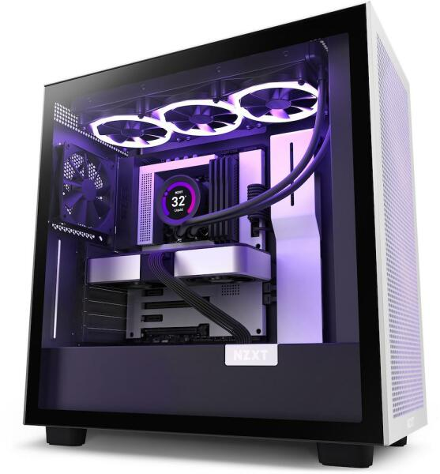
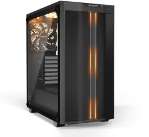

Gépházak
NZXT H7 Flow CM-H71FG

Specifikációk:
Max. Alaplap kompatibilitás: ATX
Beépített tápegység:Tápegység nélküli
Tápegység elhelyezkedés: Alsó ATX
Oldallap: Üveg
Világítás: Nincs
Extra tulajdonság
Előlapi USB: 3.0
USB: Type-C
Kábelmenedzsment
Vízhűtés: kompatibilis
Szín: Fekete
Beépíthető HDD-k (3,5") száma: 2 db
Beépíthető SSD-k (2,5") száma: 6 db
Előlapi (5,25") bővítőhelyek száma: 0 db
Beépített ventilátorok: 2 db
Beépíthető ventilátorok(12CM) száma: 7 db
Processzorhűtő maximális magassága: 185 mm
Videokártya maximális hossza: 400 mm
Súly: 10.05 kg
PURE BASE 500DX WHITE -BGW38

Specifikációk:
Max. Alaplap kompatibilitás:ATX
Beépített tápegység:Tápegység nélküli
Tápegység elhelyezkedés: Alsó ATX
Oldallap: Üveg
Világítás
A-RGB Led - Házvilágítás
A-RGB Led - Szalag
Extra tulajdonság
Előlapi USB: 3.0
USB: Type-C
Hangszigetelt
Kábelmenedzsment
Vízhűtés: kompatibilis
Led szabályzó
Szín: Fekete
Beépíthető HDD-k (3,5") száma: 2 db
Beépíthető SSD-k (2,5") száma: 5 db
Előlapi (5,25") bővítőhelyek száma: 0 db
Beépített ventilátorok: 3 db
Beépíthető ventilátorok(12CM) száma: 6 db
Processzorhűtő maximális magassága: 190 mm
Videokártya maximális hossza: 370 mm
Súly: 8.92 kg